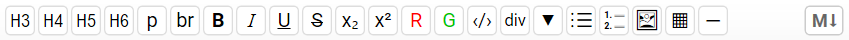

Reporting¶
All calculations are automatically collected into a professionally formatted calculation report. You can print it or open it with MS Word for editing. Besides math expressions, you can add headings, comments, tables and images.
Headings¶
A heading is a text, enclosed in double quotes ("). It is bold and larger than the main text.
Text/Comments¶
Comments are enclosed in single quotes ('). You can skip the closing quote, if it is the last symbol in the line. Headings and comments can contain any symbols without restrictions. Everything outside them is assumed to be math expressions. However, if you put any formulas inside comments, they will not be calculated or formatted. Since the final output is rendered to an Html document, you can use Html and CSS in comments to provide your calculation report with additional formatting.
Units in Comments¶
Alternatively, to native units, you can enter all values to be unitless and then put the units in the comments. In this case, you will have to include all unit conversion factors in the equations. Also, there is an option to generate a selection box for length units - m, cm and mm. You only need to insert %u in comments wherever you want the units to appear. When the program generates the input form (see further) it checks whether %u exists somewhere in the code. If so, it automatically adds a unit selection combo box, at the top-right corner. When you change the units from the combo, they will be filled in all occurrences of %u in the code. You can try it below:
| Markdown code | Html code | Output |
|---|---|---|
### Heading 3 |
<h3>Heading 3</h3> |
Heading 3 |
#### Heading 4 |
<h4>Heading 4</h4> |
Heading 4 |
##### Heading 5 |
<h5>Heading 5</h5> |
Heading 5 |
###### Heading 6 |
<h6>Heading 6</h6> |
Heading 6 |
--- (horizontal line) |
<hr/> |
——————— |
**Bold** |
<strong>Bold</strong> |
Bold |
*Italic* |
<em>Italic</em> |
Italic |
***Bold Italic*** |
<em><strong>Bold Italic</strong></em> |
Bold Italic |
++Underlined++ |
<ins>Underlined</ins> |
Underlined |
~~Struck through~~ |
<del>Struck through</del> |
|
==Highlighted== |
<mark>Highlighted</mark> |
Highlighted |
x^superscript^ |
x<sup>superscript</sup> |
xsuperscript |
x~subscript~ |
x<sub>subscript</sub> |
xsubscript |
`Code` |
<code>Code</code> |
Code |
[Link](https://mywebsite.com) |
<a href="https://mywebsite.com">Link</a> |
Link |
 |
<img src="image.jpg" alt="Image" /> |
|
> Blockquote 1>> Blockquote 2 |
<blockquote>Blockquote 1<blockquote>Blockquote 2</blockquote></blockquote> |
Blockquote 1, Blockquote 2 |
When you run the calculations, the "Units" combo will disappear from the output. Only the units will remain as filled. The program will also create a variable Units, which will contain the conversion factor from the selected units to meters. Its value is 1, 100 and 1000 for m, mm and cm, respectively. You can use it for units conversion inside the calculations. For example, you can create a conditional block for displaying the selected units in the report:
#if *Units* ≡ 1
'The selected units are meters
#else if *Units* ≡ 100
'The selected units are centimeters
#else if *Units* ≡ 1000
'The selected units are millimeters
#end if
Formatting with Html and CSS¶
CalcpadCE can be used as a development platform for professional engineering programs. If you are not going to do that, you can skip this chapter.
Html (Hyper Text Markup Language) is a markup language which is created for formatting web pages. You can change the font type, size and weight, the color of the text and to insert tables, images, etc. This is performed by adding special elements called "tags". Each tag is enclosed in angular brackets: "<tag>". Some tags are used in pairs - opening "<tag>" and closing "</tag>". The contents is going in between. For example, if you want to make some text bold, you can use the following tags: <b>Bold text</b>. Even if you are not a professional programmer, you can easily learn some basic Html, to use with CalcpadCE:
| Html code | Output |
|---|---|
<h3>Heading 3</h3> |
Heading 3 |
<h4>Heading 4</h4> |
Heading 4 |
<h5>Heading 5</h5> |
Heading 5 |
<h6>Heading 6</h6> |
Heading 6 |
<hr/> (horizontal line) |
———————— |
<p>Paragraph</p> |
Paragraph |
Line<br/>break |
Line break |
<b>Bold</b> |
Bold |
<i>Italic</i> |
Italic |
<u>Underlined</u> |
Underlined |
<s>Struck through</s> |
|
<span style="color:red;">Red</span> |
Red |
x<sup>superscript</sup> |
\(x^{superscript}\) |
x<sub>subscript</sub> |
\(x_{subscript}\) |
<span style="font:14pt Times;">Times, 14pt</span> |
Times, 14pt |
You can put Html tags only in comments, but you can also make them affect expressions. For example:
'<span style="color:red;"> as simple as ' 2 + 2 '</span>'
will give the following output:
as simple as \(2 + 2 = 4\)
We simply enclosed the expression with two comments. The first comment contains the opening tag '<span style="color:red;">' and the second - the closing tag '</span>'. Everything between the two tags is colored in red. Make sure not to forget the quotes. Otherwise, the program will try to parse the Html code as math expression and will return an error. The following code: style="color:red" is called "inline CSS" (Cascading Style Sheets). It is used to format the look of Html documents. You can learn more about Html and CSS from the following links:
http://www.w3schools.com/html/
You can also use some of the many free WYSIWYG Html editors available on the Internet.
Predefined Classes¶
Some formatting that is commonly used in engineering design worksheets is predefined as CSS classes and can be inserted by simply assigning the respective class to Html elements.
err - adds red color to text:
'<span class="err">The check is not satisfied ✖</span>
The check is not satisfied ✖
ok - adds green color to text:
'<span class="ok">The check is satisfied ✔</span>
The check is satisfied ✔
ref - (right aligned) it is used for references to design codes and equation numbering:
'<span class="ref">[EN 1992-1-1, §9.2.2]</span>
[EN 1992-1-1, §9.2.2]
bordered - adds border to tables:
'<table class="bordered">...</table>
data - makes the first column left aligned and the others - right aligned:
'<table class="data">...</table>
Content Folding¶
If you have some long and detailed calculations, you can fold them optionally in the output. They will be hidden by default, except for the first line, which can be used for the section heading. All you need to do is to enclose the folding section into a Html "div" element with class "fold", as follows:
'<div class="fold">
'<b>Heading</b> (click to unfold)
'<p>Content to be folded</p>
'</div>
The result will look as follows:
Heading (click to unfold)
Content to be folded
Images¶
Before inserting an image into CalcpadCE document, you need to have it already as a file. You can create it by some image editing software and save it to a *.png, *.gif or *.jpg file. You can use some freeware programs like Paint, Gimp, InkScape, DraftSight or others. Then you can insert it using Html. All you need to do is to put the following text at the required place, inside a comment:
'<img style="float:right" src="c:/Users/Me/Pictures/Picture1.png" alt="Picture1.png">
Of course, instead of "c:/Users/Me/Pictures/Picture1.png" you must specify the actual path to your image. The file can be local, network or on the Internet. Always use forward slashes "/", even if the file is local. If the image is located in the same folder as the current worksheet, you can specify a relative path as follows: "./Picture1.png". The text style="float:right;" aligns the image to the right allowing the text to float at left. Otherwise, the image will become part of the text flow and will make it split. Alternatively, to style="float:right", you can use class="side" for the same purpose.
You can also insert an image using the button from the toolbar. You will be prompted to select a file. When you click "Open", the required record will be inserted at the beginning of the code. When you run the calculations, the picture will appear in the output window.
Formatting with Markdown¶
Markdown is a simple and lightweight markup language for text formatting. Unlike Html, it uses individual symbols or short sequences of symbols for tagging. In CalcpadCE, you can use Markdown in comments optionally, instead of Html. Since it requires an additional parsing step, you can switch it on and off by using the following keywords inside your worksheet:
#md on - switches Markdown mode on;
#md off - switches Markdown mode off.
During parsing, the marked text is converted to Html and then passed for further processing. Since this is performed line-by-line, block level formatting like lists, tables, etc. are not fully supported. You can use the following syntax elements:
| Markdown code | Html code | Output |
|---|---|---|
### Heading 3 |
<h3>Heading 3</h3> |
Heading 3 |
#### Heading 4 |
<h4>Heading 4</h4> |
Heading 4 |
##### Heading 5 |
<h5>Heading 5</h5> |
Heading 5 |
###### Heading 6 |
<h6>Heading 6</h6> |
Heading 6 |
--- (horizontal line) |
<hr/> |
——————— |
**Bold** |
<strong>Bold</strong> |
Bold |
*Italic* |
<em>Italic</em> |
Italic |
***Bold Italic*** |
<em><strong>Bold Italic</strong></em> |
Bold Italic |
++Underlined++ |
<ins>Underlined</ins> |
Underlined |
~~Struck through~~ |
<del>Struck through</del> |
|
==Highlighted== |
<mark>Highlighted</mark> |
Highlighted |
x^superscript^ |
x<sup>superscript</sup> |
xsuperscript |
x~subscript~ |
x<sub>subscript</sub> |
xsubscript |
`Code` |
<code>Code</code> |
Code |
[Link](https://example.com) |
<a href="https://example.com">Link</a> |
Link |
 |
<img src="image.jpg" alt="Image" /> |
|
> Blockquote 1>> Blockquote 2 |
<blockquote>Blockquote 1<blockquote>Blockquote 2</blockquote></blockquote> |
Formatting Toolbar¶
The formatting toolbar is located just above the code editing box. It allows fast insertion of formatting markup in comments. It supports both Html or Markdown, depending on your choice. To enable Markdown, switch the M⭣ button on. Also, do not forget to add "#md on" on top of your worksheet.

The formatting toolbar includes the following commands:
| Button | Command | Shortcut | Html | Markdown |
|---|---|---|---|---|
| H3 | Heading 3 | Ctrl+3 | <h3>...</h3> |
###... |
| H4 | Heading 4 | Ctrl+4 | <h4>...</h4> |
####... |
| H5 | Heading 5 | Ctrl+5 | <h5>...</h5> |
#####... |
| H6 | Heading 6 | Ctrl+6 | <h6>...</h6> |
######... |
| p | Paragraph | Ctrl+L | <p>...</p> |
— |
| br | Line Break | Ctrl+R | ...<br/>... |
— |
| B | Bold | Ctrl+B | <strong>...</strong> |
**...** |
| I | Italic | Ctrl+I | <em>...</em> |
*...* |
| U | Underline | Ctrl+U | <ins>...</ins> |
++...++ |
| Strikethrough | — | <del>...</del> |
~~...~~ |
|
| x2 | Subscript | Ctrl+"+" | <sub>...</sub> |
~...~ |
| x2 | Superscript | Ctrl+Shift+"+" | <sup>...</sup> |
^...^ |
| R | Red Color | — | <span class="err">...</span> |
— |
| G | Green Color | — | <span class="ok">...</span> |
— |
| ‹/› | Span | — | <span>...</span> |
— |
| div | Div | — | <div>...</div> |
— |
| ▼ | Folded Div | — | <div class="fold">...</div> |
— |
| ⋮☰ | Bulleted List | Ctrl+Shift+L | <ul><li>...</li>...</ul> |
— |
| 1.➖ 2.➖ |
Numbered List | Ctrl+Shift+N | <ol><li>...</li>...</ol> |
— |
| 🖼 | Image | — | <img style="height:...; width:..." src="..." alt="..."> |
— |
| ▦ | Table | — | <table class="bordered"><thead><tr><th>...</th></tr></thead><tbody><tr><td>...</td></tr></tbody></table> |
— |
| — | Horizontal line | — | <hr/> |
--- |
To apply a formatting tag to a certain part of the text, select the part first and then press the respective button. If you press it once again, you will remove the existing formatting of the same type. CalcpadCE supports word autoselection. If you click inside a word and press a formatting button, it is applied for the whole word.